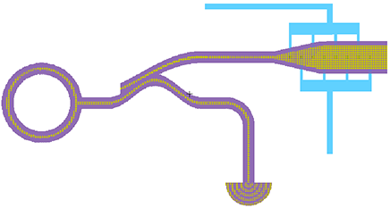

The Photonics technology demonstrates Electric's capability to design light-wave
paths on a chip.
These can be arbitrarily curved and can interact with electronics.
Like all circuits in Electric, photonics light guides have topology that lets light paths be matched easily to schematics.
The current Photonics technology is not complete, nor does it align with any real Photonics fabrication.
Instead, it exists as a starting point for any real photonics work and demonstrates the power of Electric to handle
unusual circuitry.
